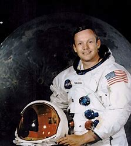
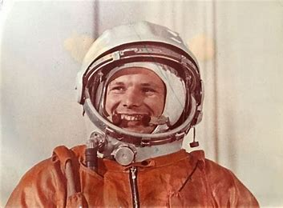
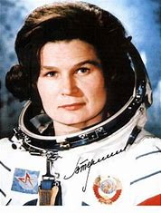
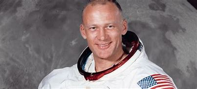
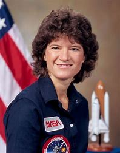

Famous Astronauts
Neil Armstrong
Notable Mission: Apollo 11
Neil Armstrong was the first human to walk on the Moon on July 20, 1969. His famous words, "That's one small step for man, one giant leap for mankind," marked a historic moment in human space exploration.
Yuri Gagarin
Notable Mission: Vostok 1
Yuri Gagarin became the first human to travel into space on April 12, 1961. His mission lasted 108 minutes and he orbited the Earth once.
Valentina Tereshkova
Notable Mission: Vostok 6
Valentina Tereshkova was the first woman to fly in space, launching on June 16, 1963. She spent nearly three days in orbit and remains the only woman to have been on a solo space mission.
Buzz Aldrin
Notable Mission: Apollo 11
Buzz Aldrin was the second person to walk on the Moon, following Neil Armstrong during the Apollo 11 mission. He has since become an advocate for space exploration.
Sally Ride
Notable Mission: STS-7
Sally Ride became the first American woman in space on June 18, 1983. She flew on the Space Shuttle Challenger and inspired future generations of women in science and space.
John Glenn
Notable Mission: Mercury-Atlas 6
John Glenn was the first American to orbit Earth, completing three orbits in 1962. He later returned to space at age 77.

Alan Shepard
Notable Mission: Freedom 7
Alan Shepard was the first American in space, making a suborbital flight on May 5, 1961. He later walked on the Moon during Apollo 14.

Chris Hadfield
Notable Mission: ISS Expedition 35
Chris Hadfield, a Canadian astronaut, became widely known for his educational videos from the ISS and his rendition of "Space Oddity."

Mae Jemison
Notable Mission: STS-47
Mae Jemison became the first African American woman in space in 1992. She continues to advocate for science education.

Peggy Whitson
Notable Mission: ISS Expeditions
Peggy Whitson holds the U.S. record for the most cumulative time spent in space, totaling over 665 days.

Michael Collins
Notable Mission: Apollo 11
Michael Collins piloted the Apollo 11 command module, staying in orbit while Armstrong and Aldrin walked on the Moon.

Rakesh Sharma
Notable Mission: Soyuz T-11
Rakesh Sharma became the first Indian citizen to travel into space on April 2, 1984, aboard the Soviet spacecraft Soyuz T-11. He famously described India as "Sare Jahan Se Accha" when asked about his view of the country from space.

Kalpana Chawla
Notable Mission: STS-107
Kalpana Chawla was the first woman of Indian origin in space. She flew on the Space Shuttle Columbia in 1997 and tragically lost her life during her second mission in 2003.

Sunita Williams
Notable Mission: ISS Expeditions 14/15, 32/33
Sunita Williams, an astronaut of Indian descent, holds the record for the longest spaceflight by a woman and has performed multiple spacewalks, spending a cumulative 322 days in space.